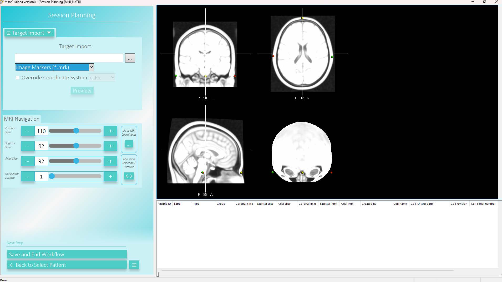
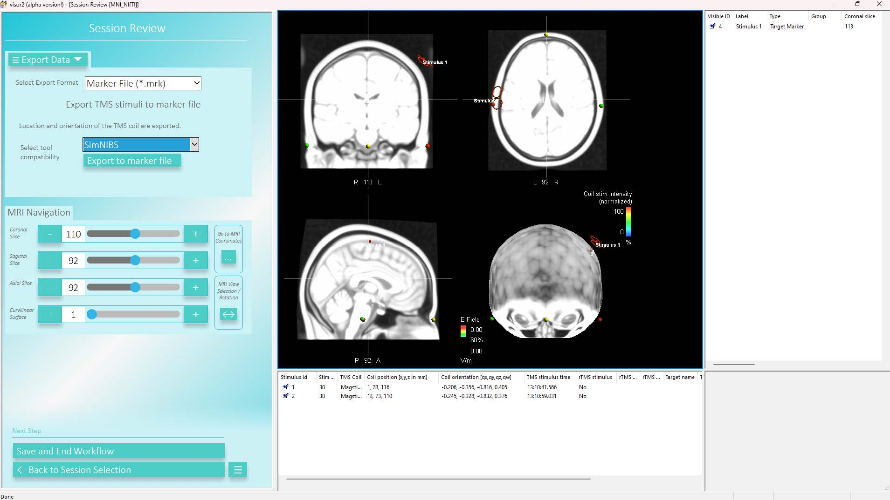

ANT visor¶
This module provides import and export functions for ANT visor2 (version 2.8 or newer).
ANT visor2¶
Information provided by ANT
In ANT visor2, the patient must have been created using the same NIfTI MR image that you provided as T1 image to SimNIBS charm for generating the m2m-folder. Already existing patients created in prior visor2 versions (< v2.8) cannot be used. Furthermore, neuronavigation needs to be performed with a coil type for which a SimNIBS coil model exists.
Import¶
To import targets from a SimNIBS-created .mrk-file, enter the Session Planning workflow, go to Target Import and switch the file format to Image Markers (*.mrk). Then, save the imported targets:

Export¶
You can export stimuli of a TMS session in a SimNIBS compatible format in the usual Session Review workflow. Select Export Data and set the Export Format to Marker File (*.mrk), set the tool compatibility to SimNIBS and click Export to marker file:

SimNIBS¶
Import¶
simnibs.ant.read(fn) reads .mrk files and returns a list of simnibs.TMSLIST() objects and a dict with some information about the NIfTI MRI used by ANT visor2 for neuronavigation.
from simnibs import sim_struct, ant
fn = "my_positions.mrk"
tms_lists, imageinfo = ant().read(fn, return_imageinfo=True)
s = sim_struct.SESSION()
for l in tms_lists:
s.add_tmslist(l)
s.poslists[0].pos[0].didt # <- defaults to 1 A/µs and needs to be updated by hand.
s.poslists[0].pos[0].name # <- name is filled with data from .mrk if available or defaults to ''.
Export¶
simnibs.ant.write(obj, fn) writes an .mrk file for import into ANT visor2. Note: ANT visor2 wants to have the “imageinfo” dict to cross-check whether the positions were created for the same NIfTI MRI that is used for neuronavigation. SimNIBS will provide that automatically when you define the m2m-folder of the subject.
from simnibs import sim_struct, ant
fn = "precomuted_coilpositions.mrk"
subpath='m2m_mysubject'
### export from TMSLIST
tmslist = sim_struct.TMSLIST()
tmslist.add_position()
# ... define (multiple) positions ...
ant().write(tmslist, fn, subpath=subpath)